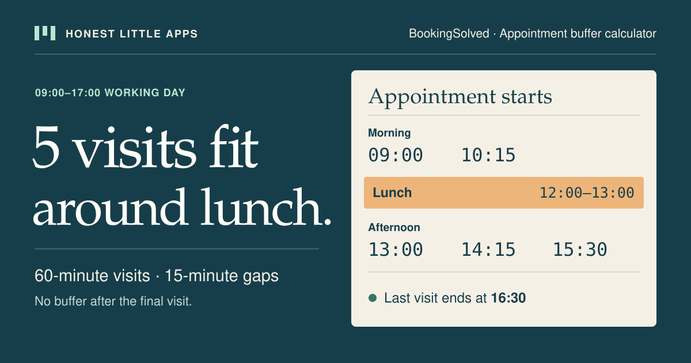

Preparation is time.
Use a buffer that represents the work between clients: resetting tools, writing notes or getting ready. The example's 15 minutes is a starting input, not advice for your service.
APPOINTMENT BUFFER CALCULATOR
See which appointments fit around lunch. Enter your working hours, service length and reset time to get a schedule with exact start times.
Calculate my window ↘Free browser tool · No calendar connection · No signup
A LITTLE SPACE CHANGES THE DAY
09:00–10:00 · Appointment15 minutes · Reset the space10:15–11:15 · Appointment15 minutes · Prepare for the nextIllustration, not a recommended buffer length.ONE SERVICE · ONE WORKING WINDOW
Check availability in your own calendar. Choose one or two starts and optionally add the date and time-zone label as you want the client to see them. The label does not convert the times.
The appointment and required buffer do not fit. Try a longer window or different durations.
Inside the iPhone app
The calculator works out capacity. BookingSolved can check selected requests against Apple Calendar and prepare a reply for review.


App Store screenshots. Select a screen for a larger view. Example entries are shown; this webpage does not transfer its inputs into the app.
WHEN A REAL CLIENT REQUEST ARRIVES
BookingSolved turns selected client requests into proposed Apple Calendar appointments and editable replies. Service presets include durations and buffers; you review changes before approving them.
Explore BookingSolved on the App Store ↗First three completed actions are free; Pro is an optional auto-renewing subscription for unlimited actions. Check the listing for current details. This browser calculator does not access Calendar, contact clients or sync a plan into the app.
On another device? Scan with your iPhone Camera, then tap the link.

Open BookingSolved: Client Booking on the App Store
The code opens the App Store. It does not transfer entries or results from this page.
Check which waitlist requests fit the opening using each person’s available window, the service length and the cleanup time. The worksheet doesn’t book or contact anyone.
Moving a confirmed visit instead? Try the 12-minute reschedule exercise to practise offering two openings while preserving the original appointment until the client agrees.
For service-business guides and appointment-planning resources, this compact version lets readers set hours, cleanup and a fixed break without leaving your page.
Open the standalone widget. To install it, paste the HTML below into an embed or custom HTML block on a site that permits iframes. Keep the frame at full width; it scrolls if a long schedule needs more room.
The widget asks for times only. It has no accounts, cookies, tracking scripts or saved entries. Its host may keep ordinary access logs. Attribution and the optional App Store link are visible.
Watch two schedules compared in 18 seconds. This silent recording shows the web calculator, with explanations visible in the video. Optional English captions and a written example are also available.
Open the MP4 · Download timed captions
From 9 a.m. to noon, six 30-minute visits fit back to back. Change the buffer to 10 minutes between visits, leaving the box for a final buffer unchecked. Four visits now fit. They start at 9:00, 9:40, 10:20 and 11:00. The last ends at 11:30.
Those remaining 30 minutes are shorter than the 40 needed for another visit: 10 minutes to clean up after the fourth client and 30 minutes for the fifth. This example assumes an otherwise empty shift.
THE ARITHMETIC, IN PLAIN SIGHT
From 09:00 to 17:00, you have 480 minutes. Six 60-minute appointments and five 15-minute gaps use 435 minutes, ending at 16:15. A seventh appointment would need 510 minutes with its preceding gap, so it does not fit.
Round down to a whole appointment in each available block. Minutes left before lunch and after the last appointment stay separate.
With the same hours and a noon–13:00 break, two appointments fit before lunch and three after it. The last one ends at 16:30. The gap from 11:15 to noon is too short for another 60-minute appointment.

Use a buffer that represents the work between clients: resetting tools, writing notes or getting ready. The example's 15 minutes is a starting input, not advice for your service.
Protect lunch at its actual time. A free half-hour on either side of lunch cannot be combined into one uninterrupted hour for a client.
A tidy sketch still needs checking against the real calendar. Existing appointments and different service lengths can change which times are usable.
The window is assumed ready for work at its starting time. Reserve initial setup by moving that time forward before calculating.
Not in one calculation. This simple model repeats one duration. For a mixed day, check each service and its actual calendar position separately.
Only if the next appointment and any required buffer fit. A remainder is not automatically a usable appointment slot.
No. This page does not save or send your inputs. Copy the plan before refreshing or leaving.
Share the public guide. Your entries and results are not included.
Open the public guide link